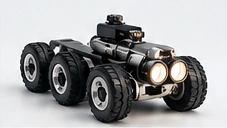
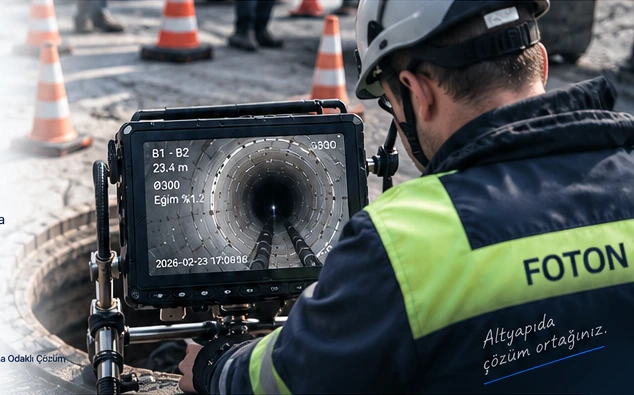
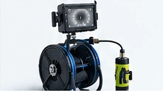
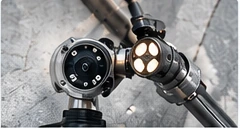
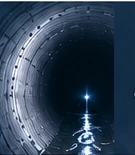
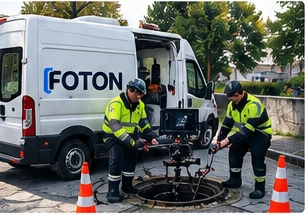
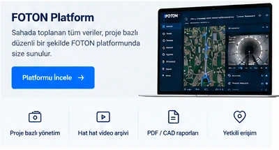

Robotik Crawler Kamera
Orta ve büyük çaplı hatlarPan / tilt görüntülemeMetre ve eğim bilgisiUzun mesafe çalışma
Ø100 mm'den Ø2000 mm'ye kadar kanal ve boru hatlarında profesyonel görüntüleme, kayıt ve baca / kanal temizliği hizmetleri.

Farklı çap ve saha koşullarına uygun kamera sistemleriyle görüntüleme yapılır.
Kamera Sistemlerini İncele →


Altyapının bugünkü durumunu görmek, yarın için doğru kararlar almaktır.


Kanal ve baca hatlarının görüntülenmesi, kayıt altına alınması ve temizlik ihtiyaçları için saha odaklı çözüm.
Video, proje, rapor ve erişim tek yapıda tutulur.

Kanal görüntüleme sırasında alınan gerçek video kayıtları proje ve hat bazında FOTON arşivine taşınır.
Hat çapı, yaklaşık metraj, saha konumu ve ihtiyaç duyulan hizmeti paylaşın. Uygun saha yöntemi proje koşullarına göre belirlenir.